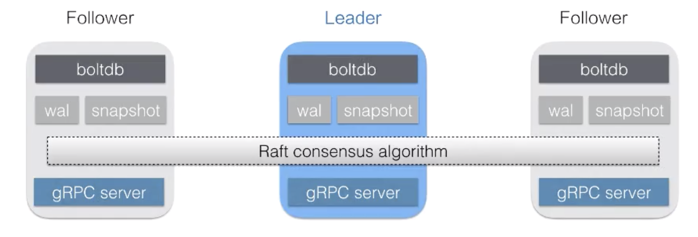
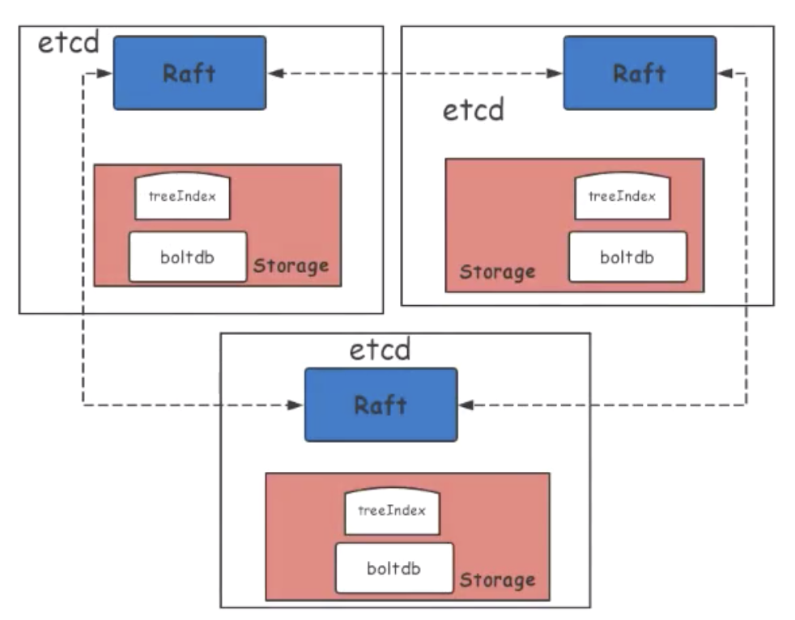
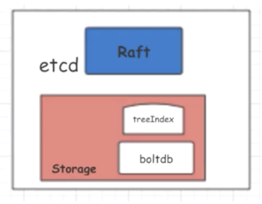
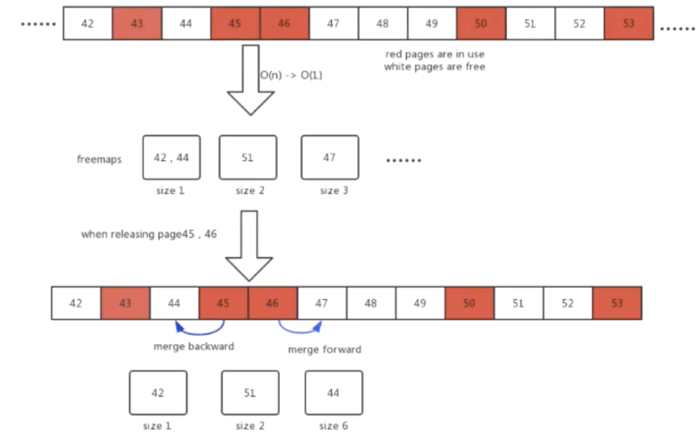
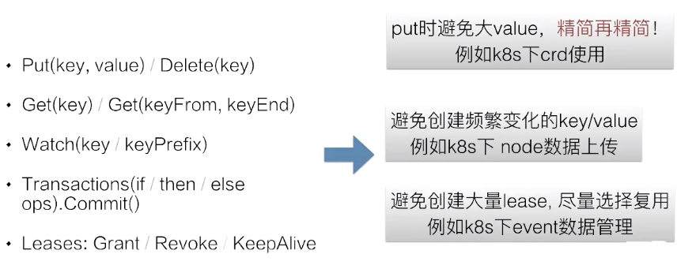

本文将主要分享以下五方面的内容：
etcd 诞生于 CoreOs 公司，使用 Golang 语言开发，是一个分布式 KeyValue 存储引擎。我们可以利用 etcd 来作为分布式系统元数据的存储数据库，存储系统里面重要的元信息。etcd 同样也被各大公司广泛使用。
下图为 etcd 的基本架构：

如上所示，一个集群有三个节点：一个 Leader 和两个 Follower。每个节点通过 Raft 算法同步数据，并通过 boltdb 存储数据。当一个节点挂掉之后，另外的节点会自动选举出来一个 Leader，保持整个集群的高可用特性。Client 可以通过连接任意一个节点完成请求。
首先我们来看一张图：

上图是一个标准的 etcd 集群架构简图。可以将 etcd 集群划分成几个核心的部分：例如蓝色的 Raft 层、红色的 Storage 层，Storage 层内部又分为 treeIndex 层和 boltdb 底层持久化存储 key/value 层。它们的每一层都有可能造成 etcd 的性能损失。
首先来看 Raft 层，Raft 需要通过网络同步数据，网络 IO 节点之间的 RTT 和 / 带宽会影响 etcd 的性能。除此之外，WAL 也受到磁盘 IO 写入速度影响。
再来看 Storage 层，磁盘 IO fdatasync 延迟会影响 etcd 性能，索引层锁的 block 也会影响 etcd 的性能。除此之外，boltdb Tx 的锁以及 boltdb 本身的性能也将大大影响 etcd 的性能。
从其他方面来看，etcd 所在宿主机的内核参数和 grpc api 层的延迟，也将影响 etcd 的性能。
下面具体来介绍一下 etcd server 端的性能优化。
server 端在硬件上需要足够的 CPU 和 Memory 来保障 etcd 的运行。其次，作为一个非常依赖于磁盘 IO 的数据库程序，etcd 需要 IO 延迟和吞吐量非常好的 ssd 硬盘，etcd 是一个分布式的 key/value 存储系统，网络条件对它也很重要。最后在部署上，需要尽量将它独立的部署，以防止宿主机的其他程序会对 etcd 的性能造成干扰。
有兴趣的小伙伴可以点击以下链接获取 etcd 官方推荐的配置要求信息：
https://coreos.com/docs/latest/op-guide/hardware.html
etcd 软件分成很多层，下面根据不同层次进行性能优化的简单介绍。想深度了解的同学可以自行访问下面的 GitHub pr 来获取具体的修改代码。
具体可参照如下链接：https://github.com/coreos/etcd/pull/9511
具体可参照如下链接：https://github.com/coreos/etcd/pull/9418
具体可参照如下链接：
https://github.com/etcd-io/etcd/commit/3faed211e535729a9dc36198a8aab8799099d0f3
具体可参照如下链接：https://github.com/etcd-io/etcd/pull/10523
其他的性能优化也非常多，这里我们重点介绍一下由阿里贡献的一个性能优化。这个性能优化极大地提升了 etcd 内部存储的性能，它的名字叫做：基于 segregated hashmap 的 etcd 内部存储 freelist 分配回收新算法。
CNCF文章：
https://www.cncf.io/blog/2019/05/09/performance-optimization-of-etcd-in-web-scale-data-scenario/

上图是 etcd 的一个单节点架构，内部使用 boltdb 作为持久化存储所有的 key/value，因此 boltdb 的性能好坏对于 etcd 的性能好坏起着非常重要的作用。在阿里内部，我们大量使用 etcd 作为内部存储元数据，在使用过程中我们发现了 boltdb 的性能问题，这里分享给大家。

上图中为 etcd 内部存储分配回收的一个核心算法，这里先给大家介绍一下背景知识。首先，etce 内部使用默认为 4KB 的页面大小来存储数据。如图中数字表示页面 ID，红色的表示该页面正在使用，白色的表示未使用。
当用户想要删除数据的时候，etcd 并不会把这个存储空间立即还给系统，而是内部先留存起来，维护一个页面的池子，以提升下次使用的性能。这个页面池子叫做 freelist，如图所示，freelist 页面 ID 为 43、45、 46、50、53 正在被使用，页面 ID 为 42、44、47、48、49、51、52 处于空闲状态。
当新的数据存储需要一个连续页面为 3 的配置时，旧的算法需要从 freelist 头开始扫描，最后返回页面起始 ID 为 47，以此可以看到普通的 etcd 线性扫描内部 freelist 的算法，在数据量较大或者是内部碎片严重的情况下，性能就会急速的下降。
针对这一问题，我们设计并实现了一个基于 segregated hashmap 新的 freelist 分配回收算法。该算法将连续的页面大小作为 hashmap 的 key，value 是起始 ID 的配置集合。当需要新的页面存储时，我们只需要 O(1) 的时间复杂度来查询这个 hashmap 值，快速得到页面的起始 ID。
再去看上面例子，当需要 size 为 3 的连续页面的时候，通过查询这个 hashmap 很快就能找到起始页面 ID 为 47。
同样在释放页面时，我们也用了 hashmap 做优化。例如上图当页面 ID 为 45、46 释放的时候，它可以通过向前向后做合并，形成一个大的连续页面，也就是形成一个起始页面 ID 为 44、大小为 6 的连续页面。
综上所述：新的算法将分配的时间复杂度从 O(n) 优化到了 O(1)，回收从 O(nlogn) 优化到了 O(1)，etcd 内部存储不再限制其读写的性能，在真实的场景下，它的性能优化了几十倍。从单集群推荐存储 2GB 可以扩大到 100GB。该优化目前在阿里内部使用，并输出到了开源社区。
这里再提一点，本次说的多个软件的优化，在新版本中的 etcd 中都会有发布，大家可以关注使用一下。
再来介绍一下etce 客户端的性能使用上的最佳实践。
首先来回顾一下 etcd server 给客户端提供的几个 API：Put、Get、Watch、Transactions、Leases 很多个操作。

针对于以上的客户端操作，我们总结了几个最佳实践调用：
最后请大家记住一点：保持客户端使用最佳实践，将保证你的 etcd 集群稳定高效运行。
本节内容到这里就结束了，这里为大家总结一下：
最后希望各位同学看完本节后，能够有所收获，为你们运行一个稳定而且高效的 etcd 集群提供帮助。希望大家继续关注下节精彩课程。